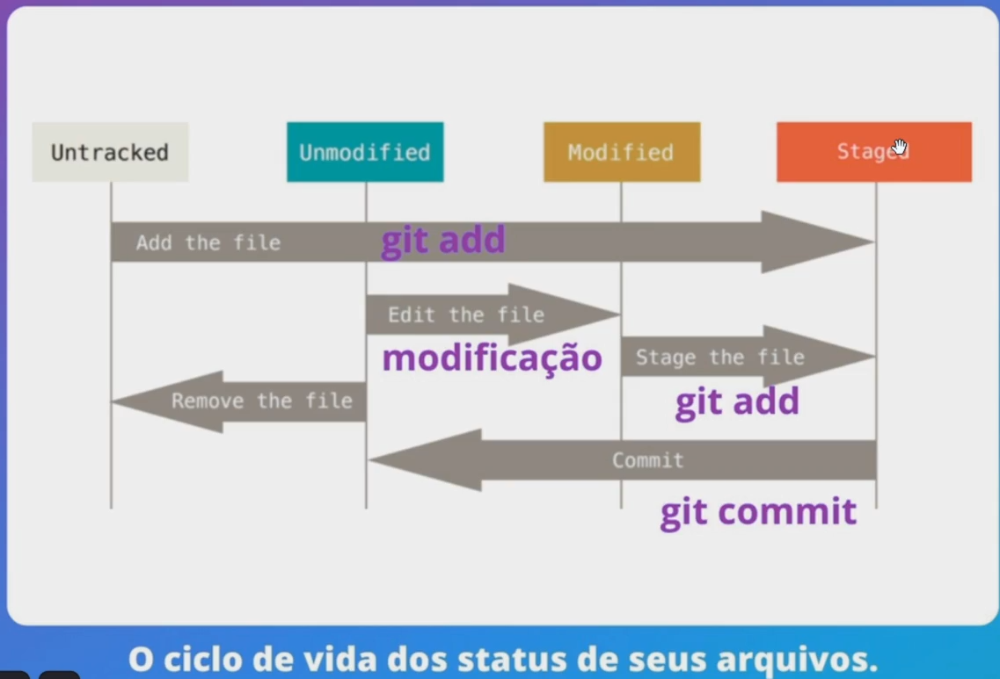
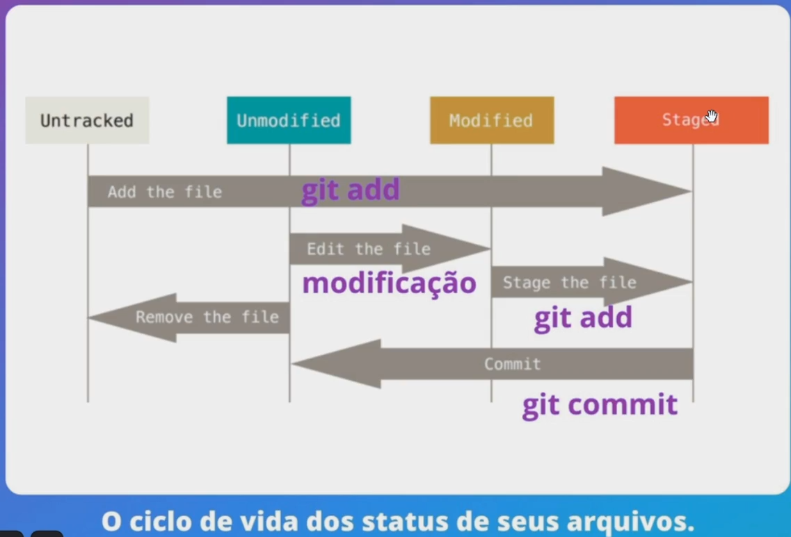

git config --global user.name "Seu Nome": Configura seu nome.
git config --global user.email "seu@email.com": Configura seu e-mail (use o mesmo do GitHub).
2. Iniciando um Projeto
git init: Transforma a pasta atual em um repositório Git (cria a pasta oculta .git).
git clone <url-do-repositorio>: Baixa um projeto existente do GitHub para a sua máquina.
3. O Ciclo Diário (O "Arroz com Feijão")
Este é o comando que você usará 90% do tempo enquanto desenvolve seus componentes em React ou funções em TypeScript.
git status: O mais importante. Te diz o que foi alterado e o que está pronto para ser salvo.
git add .: Adiciona todas as suas alterações para a "fila de espera" (Stage).
git commit -m "mensagem explicativa": Salva oficialmente suas alterações com uma nota sobre o que foi feito.
git push origin main: Envia suas alterações salvas para o GitHub.
git pull: Traz as novidades do GitHub para o seu computador (fundamental em projetos em equipe).
4. Trabalhando com Branches (Ramificações)
Para conseguir um emprego, você precisa mostrar que sabe trabalhar com features. Nunca mude o código direto na main.
git branch: Lista as ramificações existentes.
git checkout -b nome-da-feature: Cria uma nova ramificação e já entra nela.
git checkout nome-da-branch: Muda para uma branch que já existe.
git merge nome-da-branch: Junta o código de outra branch na que você está agora.
pwd: (Print Working Directory) Mostra em qual pasta você está agora.
ls: Lista os arquivos da pasta atual.
cd nome-da-pasta: Entra em uma pasta.
cd ..: Volta uma pasta para trás.
mkdir nome-da-pasta: Cria uma nova pasta.
touch nome-do-arquivo.txt: Cria um novo arquivo vazio.
rm nome-do-arquivo.txt: Remove um arquivo.
 
